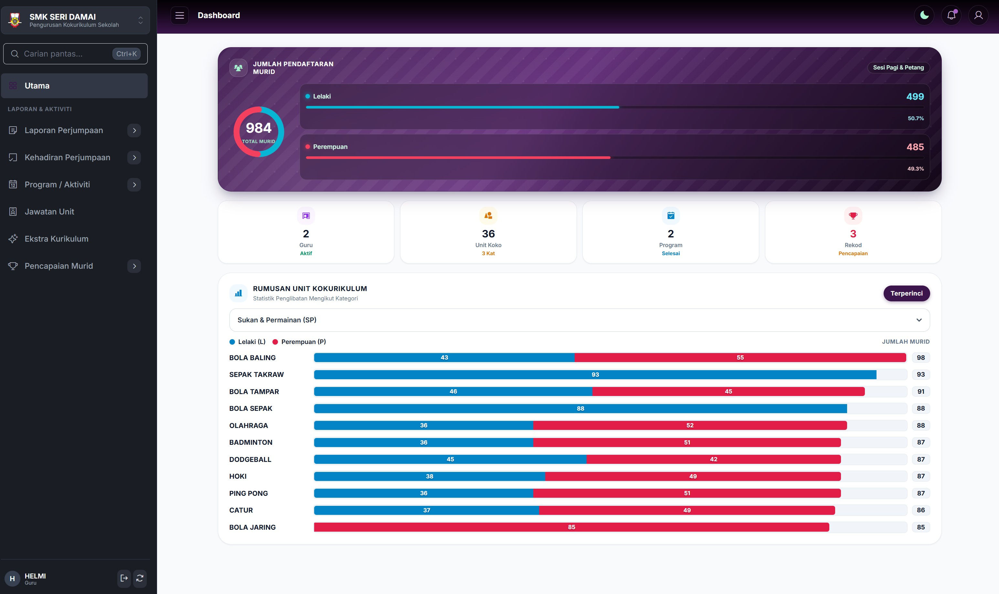
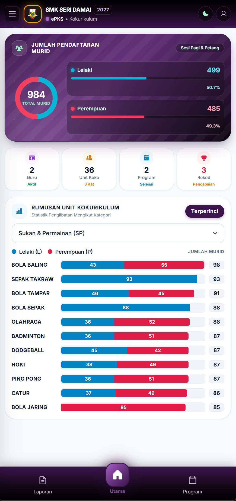
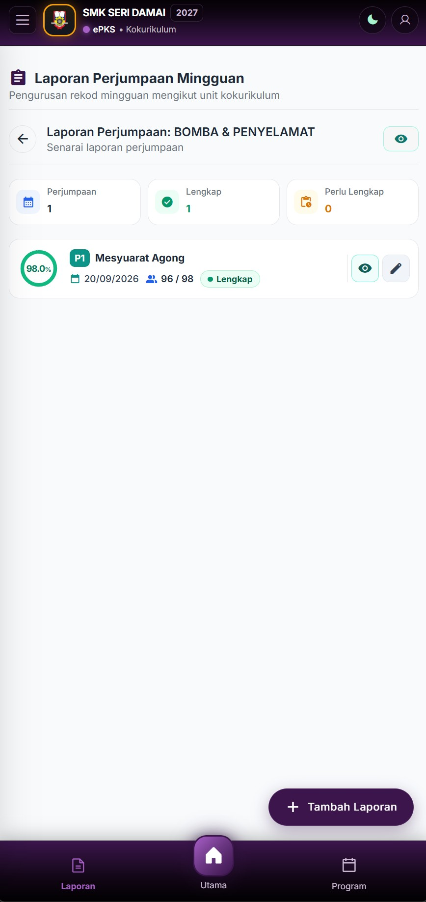
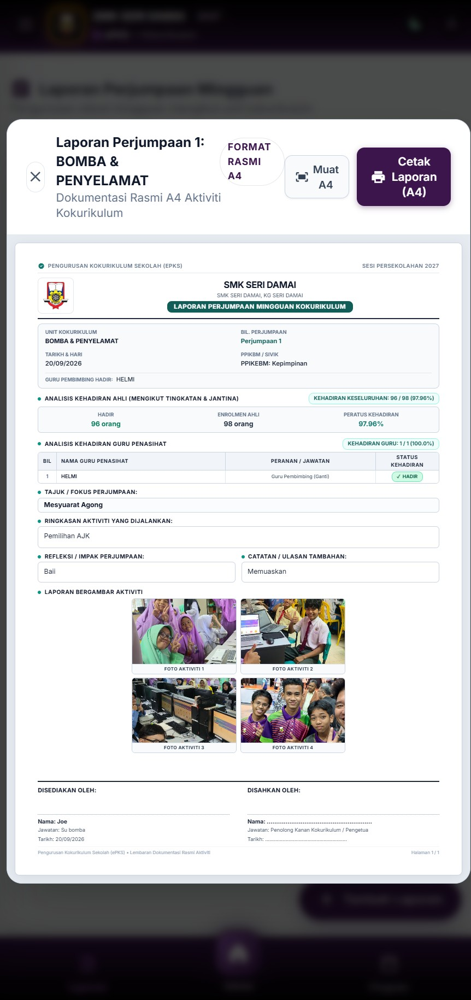

Urus lebih mudah.
Bimbing
lebih bermakna.
Daripada rekod kehadiran, pentaksiran PAJSK hingga pencapaian murid. Satukan pengurusan kokurikulum sekolah dalam sistem moden, pantas dan bersedia format A4 berasaskan Google Cloud & Sheets.

Keupayaan Sistem
Semua Modul Kokurikulum Dalam Satu Tempat
Direka mengikut garis panduan Kementerian Pendidikan Malaysia (KPM) untuk memudahkan kerja guru penasihat dan pentadbir sekolah.
Kehadiran & Perjumpaan
Rekod kehadiran ahli dan catatan aktiviti mingguan dengan carian pantas. Kenal pasti unit yang sudah lengkap atau perlu tindakan susulan.
Program & Peristiwa
Susun rekod program sekolah (merentas desa, perkhemahan, sukan tahunan) supaya dokumentasi dan senarai pemenang mudah dikumpul.
Jawatan & Kepimpinan
Urus lantikan jawatankuasa murid mengikut hierarki dan jana carta organisasi visual yang siap sedia dipamerkan di papan kenyataan.
Markah PAJSK & Ekstra
Kira markah PAJSK dan gred secara automatik (Kehadiran 50%, Jawatan 10%, Penglibatan 20%, Prestasi 20%) bersama markah bonus ekstrakurikulum.
Dashboard & Analitik
Pantau peratusan kehadiran setiap unit, statistik murid berisiko markah rendah, dan kelengkapan fail secara masa nyata.
Laporan A4 Sedia Cetak
Jana helaian laporan mingguan berformat A4 lengkap dengan statistik kehadiran, refleksi guru dan foto aktiviti sedia dicetak atau simpan PDF.
Antaramuka Sebenar
Jelajah Modul & Tangkapan Skrin
Klik pada setiap tab di bawah untuk melihat rupa bentuk antaramuka sebenar sistem Neo ePKS v5.
Satu pandangan. Gambaran menyeluruh.
Lihat jumlah murid, unit kokurikulum, program dan statistik penglibatan dalam satu dashboard.
Pengalaman Telefon Pintar
Pengurusan Dalam Poket Anda
Neo ePKS dioptimumkan sepenuhnya untuk peranti mudah alih. Guru boleh tanda kehadiran di padang dan semak status di mana sahaja.

Dashboard Ringkas
Semak statistik penglibatan murid dan status unit secara langsung melalui paparan telefon yang kemas.

Rekod Perjumpaan
Kemas kini kehadiran ahli serta-merta tanpa lag semasa aktiviti kokurikulum sedang berlangsung.

Semakan Laporan
Teliti refleksi, foto aktiviti, dan status pengesahan terus daripada skrin telefon pintar anda.
Dibina Untuk Warga Pendidik
Peranan Berbeza.
Matlamat Yang Sama.
Pengurusan kokurikulum yang cemerlang bermula dengan maklumat yang tersusun dan mudah diakses oleh semua pihak.
Lebih masa membimbing. Kurang masa menyusun rekod.
Fokus pada aktiviti bersama murid dengan rekod unit yang lebih mudah diurus secara digital tanpa kertas berselerak.
- Rekod perjumpaan dan kehadiran ahli dalam beberapa saat
- Lengkapkan catatan aktiviti, refleksi dan gambar dengan mudah
- Jana laporan format rasmi A4 untuk dicetak atau difailkan
10 Video Panduan Lengkap Percuma
Disediakan khas untuk membimbing anda dari persediaan asas Google Sheets sehinggalah kepada jana laporan dan pentaksiran PAJSK.
Miliki Sistem Neo ePKS v5 Sekarang
Satu pelaburan pintar untuk menjimatkan ratusan jam pengurusan kokurikulum sekolah anda sepanjang tahun.
Lesen Penggunaan Penuh
Sistem Neo ePKS v5 (Edisi 2026)
Apa yang anda peroleh dalam pakej ini:
-
Salinan master penuh Google Sheets & Google Apps Script Neo ePKS v5
-
Pengurusan 3 Unit Utama (Badan Beruniform, Kelab/Persatuan, Sukan/Permainan)
-
Modul Kehadiran Perjumpaan Mingguan Pantas & Analisis Kehadiran
-
Pengiraan Markah PAJSK & Gred Automatik Format Rasmi KPM
-
Modul Ekstrakurikulum & Pengurusan Rekod Jawatan / Pencapaian Murid
-
Penjana Laporan Format A4 Rasmi & Sijil Sedia Dicetak
-
Akses 10 Video Tutorial Lengkap Langkah Demi Langkah
-
Bimbingan & Akses Komuniti Support Group Telegram Rasmi
⚡ Salinan master dan akses akan dibekalkan serta-merta mengikut butiran di borang pendaftaran.
Soalan Lazim
Jawapan pantas bagi soalan yang sering ditanya.
Apakah itu Neo ePKS v5?
Neo ePKS ialah sistem pengurusan kokurikulum sekolah yang menyatukan rekod perjumpaan, kehadiran ahli, pengurusan program, carta jawatan unit dan markah PAJSK murid dalam satu platform berasaskan Google Cloud & Sheets.
Adakah sistem ini memerlukan sebarang pemasangan perisian khas?
Tidak perlu sebarang pemasangan (zero-install). Sistem beroperasi sepenuhnya melalui pelayar web (Google Chrome, Microsoft Edge, Safari) sama ada pada komputer riba, tablet mahupun telefon pintar melalui Google Drive dan Google Sheets.
Bolehkah guru menanda kehadiran di padang menggunakan telefon?
Ya, sistem ini mempunyai antaramuka responsif khusus untuk mod telefon pintar. Guru penasihat boleh menanda kehadiran ahli perjumpaan mingguan di mana-mana sahaja tanpa perlu membawa komputer riba ke padang.
Adakah laporan perjumpaan boleh dicetak terus dalam format A4?
Ya! Satu klik sahaja diperlukan untuk menjana helaian laporan rasmi A4 yang mengandungi butiran aktiviti, carta analisis kehadiran, refleksi guru serta foto aktiviti sedia dicetak atau dieksport ke PDF untuk fail kokurikulum.
Bagaimana cara membuat tempahan dan bayaran?
Hanya klik butang 'Borang Tempahan' di atas atau terus ke pautan borang rasmi kami. Anda hanya perlu membuat bayaran promosi RM 100 sekali sahaja (tanpa sebarang yuran bulanan) dan pautan salinan sistem serta panduan lengkap akan dihantar kepada anda.
Adakah disediakan sokongan dan bantuan selepas pembelian?
Ya, setiap pengguna dialu-alukan menyertai Support Group Telegram rasmi kami di t.me/AppSekolahMalaysia untuk sebarang bimbingan teknikal, perkongsian tip, dan kemas kini terkini.
Beri Ruang Untuk Potensi Murid.
Biar Rekod Lebih Mudah Diurus.
Dapatkan salinan sistem penuh Neo ePKS v5 untuk kemudahan sekolah anda sekarang.